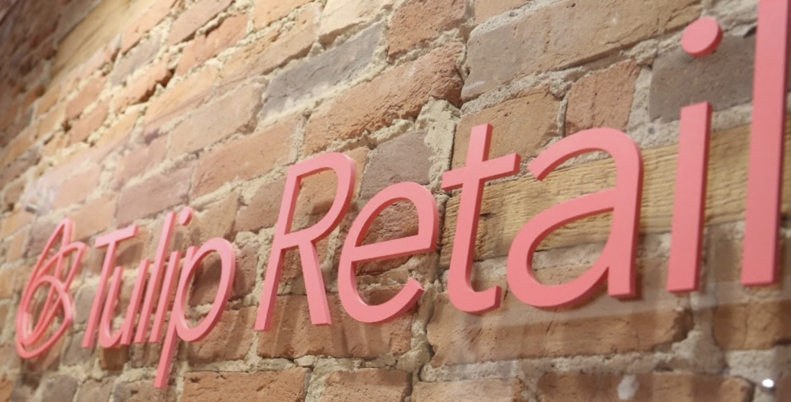
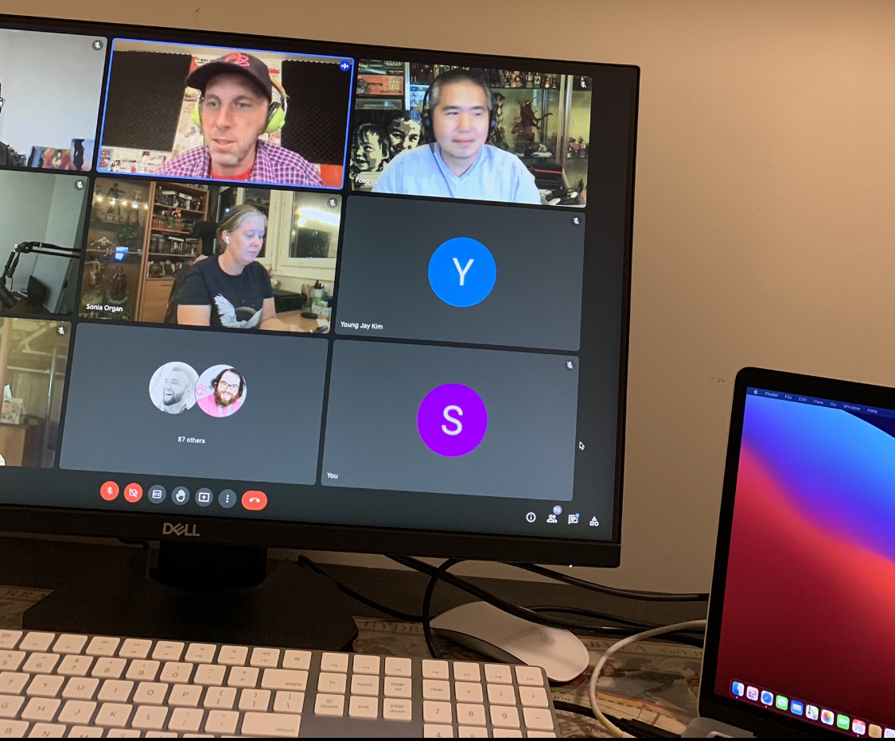
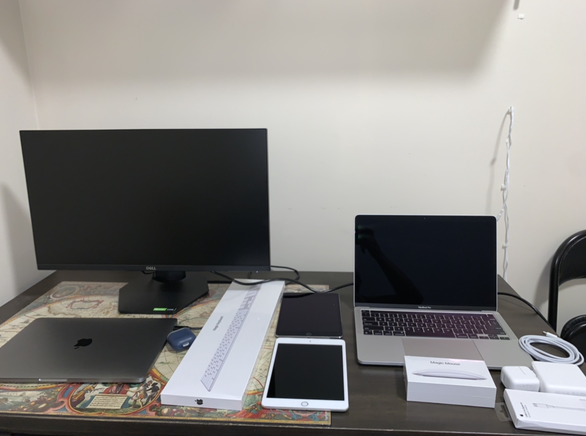
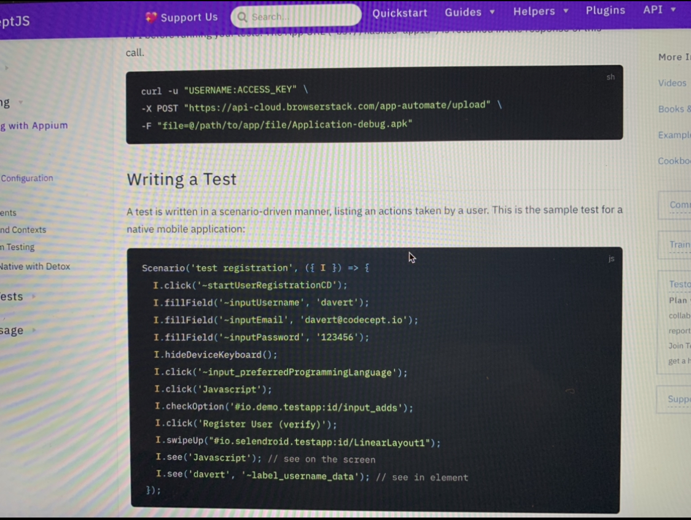

Welcome to my Co-op work term report. In this report, I will be discussing my experiences, learnings, goals I completed, challenges that I faced, and the cool stuff that I did during my work term. This was my first work term and also this was the first time I ever had a tech job so this work term had a very positive impact on me and taught me a lot about the software industry. Being a computer science major this experience will play a key part in how I understand major workflows in the tech industry.
I was lucky enough to get a co-op position at Tulip Retail this fall. Tulip is a SaaS-based company and its main focus is to transform and have a positive impact on the retail world using its technology. Tulip was founded in 2013 and since then the company has seen massive success. The software teams at Tulip consist of all sorts of smart people with different roles and backgrounds like Web Developers, IOS Developers, Quality Assurance engineers, etc. Development plays a key role at Tulip as their products work seamlessly on IOS devices and are also interconnected to their internal softwares which are web-based this allows the retailers to unlock their true potential and customers to have the best retail experience. These ultimate functionality products have impressed a lot of leading retailers like COACH, Tiffany & Co., JIMMY CHOO, etc. Tulip provides their employees with 4 day work weeks which helps the employees to have a very healthy work-life balance. People at Tulip are the nicest and are always ready to help and support. Tulip has been awarded with some very prestigious awards like Technology fast 500 in North America by Deloitte, One of the best workplaces in technology in Canada 2021, and Momentum Canada’s next 100M companies. Tulip’s head office is located in Kitchener, Ontario, but due to the current pandemic situation the work term was fully remote. I worked in the Software Quality Assurance team at Tulip and I was responsible for testing the new frontend/backend features and also for some UI automation scripts.
 This fall I got the opportunity to work as a Test Automation Developer at Tulip Retail. The first few weeks of my co-op were for my training where I learned about different strategies and the software which the QA team at tulip uses in order to test the new features. During my training I got knowledge about the concepts of unit testing, smoke testing, regression testing, UI testing, integration testing, and API testing using postman then I learned about the different types of HTTP request methods like GET, POST, DELETE, PUT after that I also got familiar with Azure DevOps Server which made it very easy for me to understand the entire application lifecycle. Once all this was done I got involved in the automation part of my job. I learned about the appium framework and CodeceptJS UI testing framework so that I can develop UI automation tests and improve the current tests. Once my training was done I was working with my mentor closely on the Clienteling app. The Clienteling app by Tulip plays an important role in bringing the customers and brands closer by providing the customers with a tailored customer experience and also allows the brands to better understand their customers which benefits both parties. It was the biggest and a very major project that I worked on. I was working closely with 2 IOS developers and a front-end developer to understand what the new features will be and how they will be working and integrated together. I had to constantly plan the test cases beforehand because of the complexity of the features and on-spot planning could have led to some unfound bugs and other issues. As the new features were being added the UI constantly changed which affected the UI selectors of the app on which the automation relied on, so along with my colleagues I had to work on the automation scripts regularly in order to modify the code to allow the test suites to run seamlessly every day reducing a manual regression task for the QA team. Two very interesting things that happened with me were that after some time my mentor realized that I was capable enough of being the only QA in a brand's development team allowing other QAs to take up other tasks and speed up the workflow. So for more than 2 months, I was the only person who everyone relied upon before releasing the feature and one mistake by me could have caused unexpected feature behaviors due to some missed bug and product delivery delays which could have affected the business. I was also a part of the company’s co-op hiring process for the next work term which gave me an insight into how the new employees are hired and what all are the main qualities that are the most valued and how to properly structure a resume. For this job, at the very start, I had to be very detail-oriented and have some kind of knowledge about software testing along with some development and version control experiences which I learned while doing my university assignments and while talking to professors and the TAs during the classes and labs. Acquiring the most appropriate skills for this job was covered during the training as a majority of the crucial testing concepts and frameworks could only be learned while working with large-scale systems and software.
 Before starting my work term I had set a few goals in my mind which I wanted to achieve by the end of my work term. These goals allowed me to work hard and be a better learner and employee by the end of my work term. Here are my goals for this work term and how I achieved these goals.
I wanted to learn about API testing and automation testing because that would help me to learn more about deep QA concepts which would allow me to become a better software tester in the future.
Action Plan:
I made sure that I read all the reading material regarding testing concepts and testing softwares given by my supervisor. I was very attentive during my training process and made sure to write down all the important points and tips that my supervisor gave me. I kept exploring the softwares to better understand them.
Measure of success:
I can think, generate and automate the test cases end to end and was able to make sure that the testing reports were accurately reported along with full API testing using postman software without anyone's help by the end of the work term which I think is a success for me.
I wanted to improve my thinking process about how I used to tackle and solve real-world problems which would help me to overcome challenging technical tasks in the most efficient way. This had a positive impact on my life and career.
Action Plan:
I made sure to attend developer meetings and QA meetings which helped me to understand how my seniors were thinking about approaching problems and I tried to apply the same thinking process while I was writing test cases for API testing and noticed how it improved my work.
Measure of success:
Now when I see complex software I am able to think of all the possible test cases and solve other testing related problems without spending a lot of time or taking help from others and I am also able to automate them most efficiently while covering the edge cases. This is a huge accomplishment for me.
I wanted to work on how I express myself and convey my words to other people. I think that if you know the solution to a problem but you are not able to communicate and explain it properly to your team then there is no point of the solution.
Action Plan:
I took part in meetings actively and I did not shy away in speaking and sharing my point of view this improved my communication skills.
Measure of success:
I saw a rise in my confidence and now I can communicate in a professional way and also express myself in the best possible way with to-the-point words and explanations. My colleagues were really impressed with it because I was able to explain to them very complex issues and bugs in a very simple language.
I wanted to work on a project in a big team. Working with other people taught me about how to collaborate and grow together by completing individual tasks. Teamwork is critical to succeed at every point of life.
Action Plan:
I made sure to be in constant touch with my team while working on projects and I also made sure that I kept updating my team members about where I was in the project and I was constantly seeking their guidance. I was also a part of major discussions about the projects and I tried to input my ideas too.
Measure of success:
By the end of the work term I was able deliver a project while working in a team and solving problems by constant collaboration and planning with my team members. When the product was delivered I knew that this was a big achievement for me and my team.
In the past 4 months, I think I have learned a lot and transformed myself to get one step closer towards becoming job-ready. All the skills that I learned during my work term ranging from API testing, automation testing to problem-solving and communication skills will help me to succeed in the future. I got confident in testing large-scale software and became very detail-oriented and collaborative by working with a lot of people during my work term. I am very sure that my testing skills have gotten really sharp by now and even my mentor believed in my skills and allowed me to QA a project on my own. My constant collaboration with software developers taught me so much about frontend/backend architectures along with some iOS concepts.
Everyone at Tulip was very supportive and helpful and they made my co-op experience very enjoyable. I loved working with different teams as everyone was ready to share their knowledge and answer my silly questions. There are few special people who were with me at every step and made the learning process very smooth for me.
Thank you everyone :)